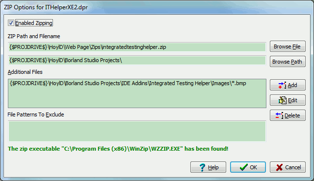

This dialogue allows you to configure the zipping of all the project's files into a ZIP file using an external command line ZIP utility like WinZip or 7Zip. The command line ZIP utility is configured in the Global Options dialogue.
Enable Zipping - This enables the zipping of the project's files after a successful compilation.
Zip Path - This is a base path from which all relative path in the zip file will be referenced.
Zip Filename - This is the path to the zip file where you want the information to be archived.
Additional Files - This is a list of file names or patterns that can be used by the ZIP utility to add additional files to the zip archive that are not part of the project.
Patterns to Exclude - This is a list if wildcard patterns that will be passed to the zipping utility and will be excluded from the zipping process.
This dialogue can accept the same macros that are defined in the Project Options dialogue.
This dialogue remembers its size and position.
Like the Project Options this information is
stored in an INI file with the extension .ITHelper along side the project
file.